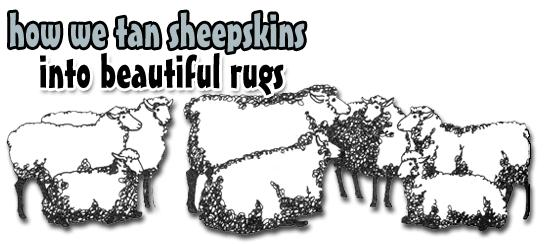
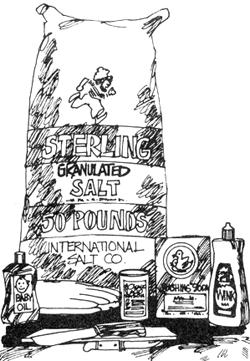
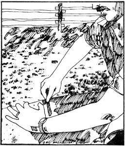
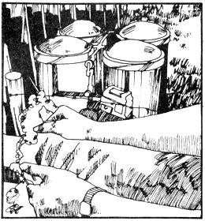

As readers of More About Milk Sheep may recall, we keep a small flock of Corriedale sheep on our place in Minnesota. The breed is a very heavy wool producer, and as our first slaughtering time neared I began to look thoughtfully at our lambs' thick jackets. "Wouldn't it be nice," I thought, "to make the hides up into rugs? We'd have those around long after the chops and roasts are gone from the freezer."
I figured I ought to be able to prepare the sheepskins myself, and got some encouragement when Mother's Bookshelf promised that two of its offerings - HomeManufacture of Furs and Skins and Home Tanning and Leather Making Guide, both by A.B. Farnham - told all one needed to know about tanning hides in the "old homey way."
My early enthusiasm was dampened a little, it's true, when I called a professional tanner to ask about one of the chemical solutions the books recommended. "Madam," the expert informed me, "there is no way you can possibly tan those hides at home." Fortunately, he was wrong. I could, and you can too.
First, though, there was the little matter of the slaughter to get past. Come now, Mother Kirberger, you didn't go and make pets of your good gray ladies' young'uns, did you? Oh, didn't I? That first butchering day has to be a super shock to a city-raised person, and it was several weeks before the packages in the freezer could be looked upon as meat and not as personalities.
My introduction to tanning was also a bit of a shock, and yours will be likewise. Nothing I can tell you will truly prepare you for working with a fresh-off-the-sheep hide. I'll simply put it on record that when Mr. Farnham says tanning is essentially hard, dirty work, he ain't just a-foolin'. The business of getting, cozy with a dead sheep isn't something polite society (whomever that might include) would applaud ... though even the most genteel will have to admit that the finished product is a fine sight to behold.
If my warning hasn't discouraged you from "tanning your own" - and I hope it hasn't - I'll be glad to tell you about own first try ... and then summarize the method we use now nor that we have a little more experience.
As soon as those first lambs had been skinned I went to work and cut all excess meat and fat away from the hides. Then, when the body heat had left the pelts, I covered each with a half-inch layer of salt and left it to cure (a matter of four to six days).
Next, before the hides were completely dried, I “fleshed them out” (removed all tissues that clung to the skins). This is the step that takes the most time and effort. Since lambskin is thin and very easily cut, I used a hunting knife only to start sections of meat and fat peeling away, and then literally ripped the waste off with my bare hands . . . which refused to close at all by the end of the day. This was the one point in the whole tanning process where manly muscle would have come in handy. Manly Muscle, however, refused to touch the hides aside from helping to salt them down. (He also seemed to like me a lot better in the evenings after I’d put every stitch of my clothing in the wash and taken a bath. Dirty indeed, Mr. Farnham!)
Then it was onto the actual tanning . . . the process that converts hide to leather. Supposedly there’s a method that uses something called glutaraldehyde and works very well. Since we were being “old timey”, however, we wanted to try a solution mentioned by Farnham, and chose one that called for alum, saltpeter, and bran. Well, the FDA must be getting suspicious of saltpeter (sodium nitrate), because our local druggist’s order for the chemical hadn’t been filled and the pharmacist in another town told us he could no longer sell the substance. Finally we had to chuck our first formula and try another.
The tanning solution we eventually settled for is made by adding 1 pint of salt and 2 ounces of oxalic acid to each gallon of water used in the curing process. Oxalic acid-which is used to clean copper-cost us $1.39 a pound. It's not toxic to handle or inhale, but is poisonous when taken internally. Don't get it in your mouth or eyes, keep youngsters and pets away from the chemical mixture and the wet treated hides . . . and do give a lot of thought to where you pour out your spent tanning solution so you won't contaminate water, wells, or growing areas.
As to the effect of the acid on human skin. . . do you remember the TV series The Beverly Hillbillies? In one episode, Mrs. Drysdale commented to Granny with horror.. "Granny, your hands are just like leather." "Nice, ain't they?" replied Granny. If you don't share the old gal's taste, wear plastic or rubber gloves inside a cloth pair when you use the oxalic solution.
Anyhow, back to the tanning process. The acid mixture was painted on the skins, which were kept moistened with the solution for four days. Between applications, four of the hides were stacked up in pairs-inner surfaces together-and the fifth was folded skin against skin.
The next step was smelly and backbreaking but very satisfying. Because oxalic acid is just that-acid-it must be neutralized by laundering the hides with lots of washing soda (sodium carbonate). You could do this very well outdoors in an old-time washtub. The sheep and ponies were drinking out of ours, though, so I did the job in the laundry tubs.
I let each hide soak for an hour in a tubful of lukewarm water to which I'd added two cups of washing soda. Wet, the skins seemed to weigh about 50 pounds apiece (hence my remark about "backbreaking") . . . but I still managed to rinse out the soda, launder the future rugs individually three times in a low-phosphate detergent, and rinse them again until the water remained clear. While washing, I picked dozens of pieces of timothy hay, corn, etc., out of the wool (various teeny cruddies came out later during the drying process). What a change! The unbelievably filthy hides (yes, we do clean our animals' stalls frequently... white sheep just, don't stay white) were now snowy, with the characteristic yellow glow of natural sheepskin in just the outer inch of hair.
OK, that still left me to confront the soaking wet hides. . . another "now that I've got it, what do I do with it?" situation. I squeezed out as much water as possible into the laundry tubs and then hung the rugs wool side up over the porch railing where they could dry in the sun.
Well, Minnesota can be pretty cheap with her sunshine come fall . . . and since each hide carried 3 to 5 inches of fleece (I told you Corriedales are woolly little devils), it soon became obvious that wasn't going to work. So the Chief Tanner, Queen of the Fragrant Follies, resorted to her clothes dryer (a pleasant antique which hadn't ever done any real harm, poor old thing). I put the sheepskins in one at a time on a low setting and took them out frequently to make sure they weren't getting too hot, or that their wool wasn't shrinking, or the hides dissolving, etc. When the fleece felt partially dry (although the hides were still wet), I hung the rugs back out on the porch railings.
That took me to the next step: working and stretching the hides as they dried so they' wouldn't end up hard and shriveled. (At no time, when doing this part of the job, should you pull on the individual tufts of upstanding wool. The fleece sets beautifully as the skin dries, but can pull out when the hide is still wet. Just stretch the skin itself... and I mean stretch. My hands were - to put it mildly - aching and sore when I'd finished. Again, men will fare better at this stake of stage process.) It took days for the hides to completely dry, and periodically I stretched each rug some more.. . rejoicing at each new patch of pure white leather I produced. Hurray! I was almost ready for the fun part of the job.
After the hides were thoroughly dry, an application of good glycerin saddle soap and leather dressing made them nice and flexible. Then came the reward for all the effort: the comb-out. With my fingers luxuriating in 4-inches-plus of Mother Nature's finest covering for necessity or decoration - soft, silky wool - I pulled apart the tips of the little cords of fleece and freed any remaining bits of vegetable matter. Then with an old, not too stiff hairbrush, I brushed each hide into a lovely ivory and white cloud. Oh Lord, to think of what I'd begun with and the many times I'd been tempted to quit when muscle and stomach seemed ready to fail me! True, a supply house back East offered sheepskins in their natural color for $20.00, but a purchased hide could never have given me the satisfaction of my homemade product.
OK, let's run through the steps in the operation again, this time minus the running commentary . . . plus some revisions in the light of further experience.
[1] OBTAIN THE HIDE . . . no problem if you have your own sheep. Otherwise, check with someone in your area who does slaughtering. The commercial houses don't buy any sheepskins from our local man, and he'd been throwing them out . . . so we've asked him to save them for us. .
Remember that sheepskins must be cooled before they're salted (how many hours this cooling takes depends on the weather). If someone is saving hides for you, ask him to spread them flesh side up and not to stack them. Then, pick up the skins as soon as possible and get them treated.
[2] SALT. First cut off any large pieces of meat and fat and trim ragged areas from the edges of the hide. Then apply a good half inch of plain granulated salt on every square inch of the pelt’s flesh side. Watch for folds . . . the skin can putrefy at those points and the smell will be terrible. And don't try to .W1 costs by skimping on the preservative I There's no need to do so anyway . . . we paid $1.95 for 100 pounds of fine salt at the grocery.
[3] SCRAPE OR FLESH. After four days brush the off and with a knife (or bare fingers, if necessary) pull away the thin adhering layers of meat and fat. Be careful not to tear the hide by getting too rough with your blade. A railing, sawhorse, or stall divider in the barn can serve as a fleshing beam on which to spread the skin while you work.
An hour of effort should get the worst of the scraping behind you. As the flesh pulls free you'll also be removing much of the muscular inner skin, which must eventually come off altogether to reveal the fine, already leather-like area beneath. You can attack this residue periodically while the hide is in the tanning solution.
[4] TAN. As I've already .mentioned, the tanning solution we used consisted of 1 pint of salt and 2 ounces of oxalic to each gallon of water. It's possible to do as we did the first time and brush the chemical onto the flesh side of the skins. Keep the surface dampened by applying the mixture twice a day, and between applications stack the hides two-by-two with their back sides together (or fold a single pelt in half, flesh side in). This process should take four days.
Now that I've had a little experience, though, I think it’s preferable to just immerse the entire hide in the liquid. Then you can work from time to time at getting off that darned thin muscular layer without having to repaint each pelt with the solution every time (since you'll 'be submerging it again anyhow). The skins will be ready after 48 to 72 hours soaking.
If you go this route, of course, You'll have to find container - such as a large canning crock or wooden barrel that won't be eaten up by the acid solution. The drum liners which bag companies supply for the shipping of chemicals could, however, be used to adapt a plastic or metal vessel for your purpose.
[5] NEUTRALIZE AND WASH. Rinse the hide in water, and then give it two washings in several gallons of water which you've added a cup of washing soda. Follow this important step - which removes the acid from the skin - with several launderings in soap, detergent, or Woolite. Rinse until the water remains clear.
[6] DRY AND SOFTEN. Wring out as much water possible, since the wool acts like a sponge and would take forever to drip dry. If the weather is warm, you can hang hide outside. Otherwise, you can proceed - as we did - to a very cautious use of the clothes dryer on its lowest setting. (Lacking both a dryer and a sunny spell, you'll have to resort to a hair dryer, or lots of wringing and separating the wool to encourage the moisture to leave.) In any case, the fleece will dry first . . . and while it still feels a bit damp is a good time to apply saddle soap and neat's-foot oil or leather conditioner to the skin side of the pelt.
As the hide dries, keep pulling and stretching it in all directions. This separates the leather fibers and keeps the rug from hardening like a plank. The skin may look yellowish in areas where the surface is drying, but its hue will lighten as you work. The finished product should be white (or slightly tan from the oil dressing), soft and supple.
Don't think that you can just apply a bit of softening agent to the damp hide and have the skin turn out like glove leather. Pulling, rubbing, and stretching periodically while the drying goes on Is the only way to produce a nice inner surface rather than a brown board.
[7] COMB-OUT. As long as the skin and fleece are damp it's very easy to pull the wool out, so resist the temptation to get on with the brushing until the whole thing is dry. Then draw the fingers of fleece apart and groom the curly mass into a finished product (after which you. may want to add a backing to your rug). Shorter-wooled hides make great slippers, vests, and so on.
That's an outline of the normal operation . . . but what if you can't work on the hides immediately after the salting is completed? Well, just brush the salt off after six days and get on with the job when you're able. The pelts are cured by that time, and in our experience they won't rot as long as you have a cool place in which to store them.
Of course, delay does alter your tanning procedure a bit. Once, a salted hide I started to scrape had so much glop adhering to it that I chucked the whole thing out on the manure pile. Then, four weeks and several rainstorms later, I had a change of heart and went out to get it. The pelt was lying skin side up and looked like a brown plank in spite of its many wettings. Nevertheless, I washed the reject, scraped it some, put it in the tanning solution, and scraped it again periodically while it was soaking. Much to my surprise, the finished product was lovely (and is now on its way to its new owner in Alaska).
If you don't have sheep hides, the tanning procedure I've described is equally good for goat and calf skins. These make attractive natural rugs and are easier to wash and dry. Our butcher is looking for a nice black and white calf hide for us to try, and I hope to obtain some goatskins also. Since hide companies seem to deal in carload lots, we must ferret our supply out of the local countryside. The above method worked well for us (and it does get easier as you go along). All the same, we're looking into the glutaraldehyde process and - if it seems simpler and more efficient - we'll give it a try and report on the results.
Tanning and fur dressing are skills as old as civilized man (and then some), so you're really getting down to basics when you not only raise your own meat but process the skins as well. Peace!
|
 |
 |
 |
|
 |
|
|